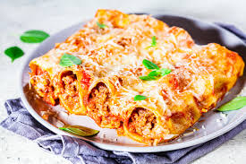

Canelones

Canelones rellenos de carne
En este caso aprenderemos como preparar los mejores canelones rellenos de carne con la receta de la abuela, por supuesto la de la abuela italiana, como no podía se de otra forma
El secreto está en no escatimar ni en el tiempo, ni el cariño ni en la calidad de los ingredientes, los que detallamos a continuacion.
- 500 gramos de carne picada (mezcla de ternera y cerdo)
- Una cebolla
- Un pimiento verde
- Salsa de tomate casera o tomate frito de bote
- 20 placas de pasta
- Quedo rallado para gratinar
- 100 gr de mantequilla
- 100 gr de harina
- Un litro de leche
- Especias al gusto
- Sal
Elaboración paso a paso
- Picamos la cebolla y el pimiento verde y lo salteamos en aceite hasta que la cebolla transparente.
- Una vez la cebolla está lista agregamos la carne, sal y pimienta.
- Una vez la carne esté cocida agregamos la salsa de tomate.
- Por otra parte cocinamos las láminas de pasta como indica el proveedor.
- Dejamos enfriar el relleno y las láminas, una vez firos armamos los canelones